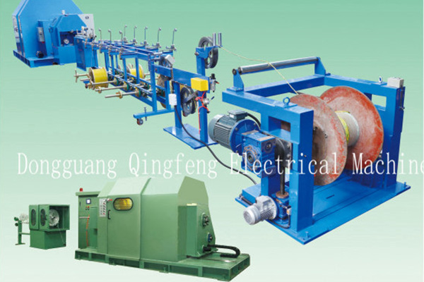

精密绞线机常规问题处理
一、精密绞线机构成及主要用途
本精密绞线机可用于小横截面的电缆线的束制绞线，由单绞机、输电线板、搅笼及电动机构成。
二、精密绞线机生产前提前准备
1.将专用工具，测量仪器放到工作中台子上，并查验测量仪器是不是对零
2.查验精密绞线机是否正常，尤其是断开关机设备和保护罩断电保护电源开关。若有异常，马上汇报维修人员完成维修
3.按生产规划准备好半成品加工，并查验半成品加工是不是工作经验合格及符合工艺标准，并把合格的半成品加工装到单绞机上，套上锥套，并调准支撑力
4.按工艺标准的数量、节径、绞向挂好传动齿轮，调节绞向，按工艺标准选定并线模安上。按要求准备好收线盘，查验绕线盘是不是完好无损，并把收线盘装在收线架子上
5.拉一牵引线经导线轮、管口一直拉至搅笼里的牵引轮上，并绕牵引轮3～4圈、将牵引线的一端固定不动在收线盘里
三、精密绞线机的使用要领
1.将单线铁路各自越过断开全自动泊车设备、通过分拖线拉至并线模前，并把电子线束拧成一股，越过并线模，拖出0.5～1.0米，并把并线模固定不动在模座上
2.将线股和牵引线接在一起，合上保护罩，迟缓开机，等线结拉至绕线盘并绕线盘2圈。关机，将线结不合格一部分裁掉，并把牵引线拉出，将合格的线结固定不动线上盘里
3.开机束绞20～30米，按要求查验单线铁路电缆线径有没有拉细，绞向是不是合乎工艺标准，线芯是不是有光泽，有没有疏松，确定准确无误后才可再次生产制造
4.在精密绞线机开机情况下，要时常观查单绞机的绕线盘运行状况和收线盘的线排状况，如遇异常现象，应紧急停机，找到情况并处理后再开机
5.生产制造结束后，用心填好产品制造卡，置放待检区，等工艺流程检查员定合格并盖章后，置放合格品区待预验
四、质量标准
各种各样束绞合不可以整束电焊焊接，单线铁路容许电焊焊接，但同一横截面上不容许有两个以上的连接头，两连接头间间距应不小于300mm，接口处要结实、光洁。经束合的线芯不可以缺根、断开、疏松、压叠状况线芯里的单线铁路误差、节径、绞向应合乎工艺标准
